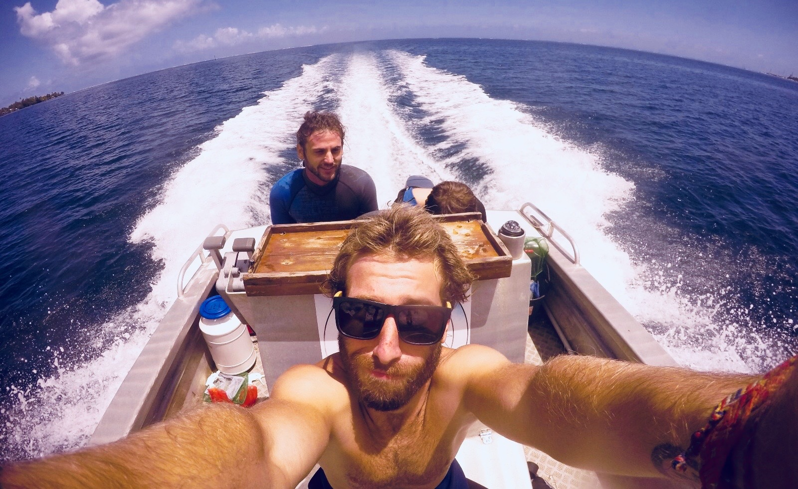
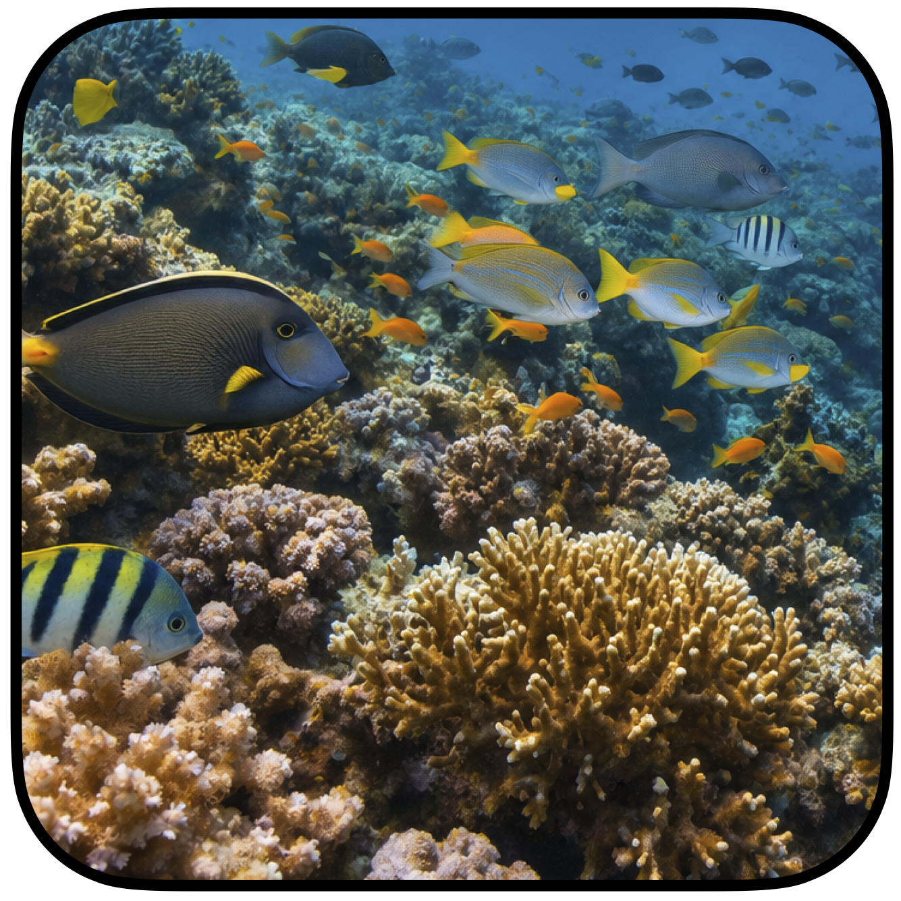
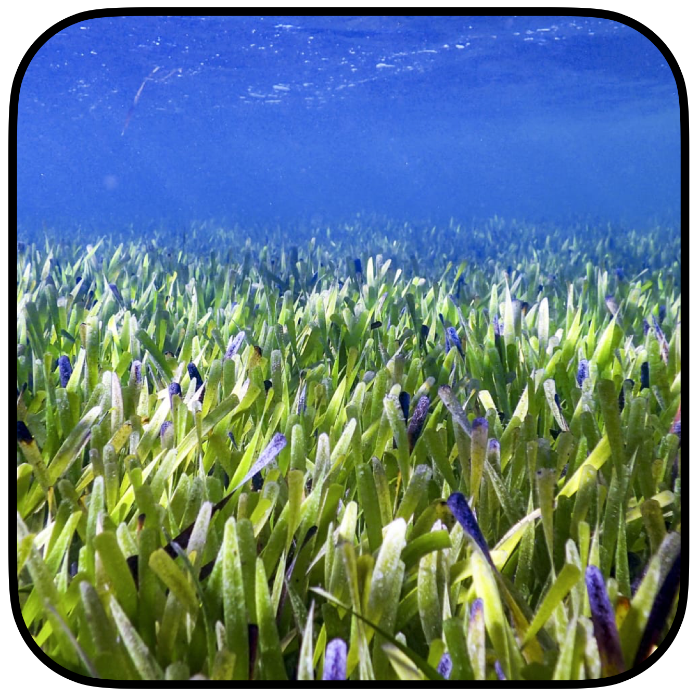
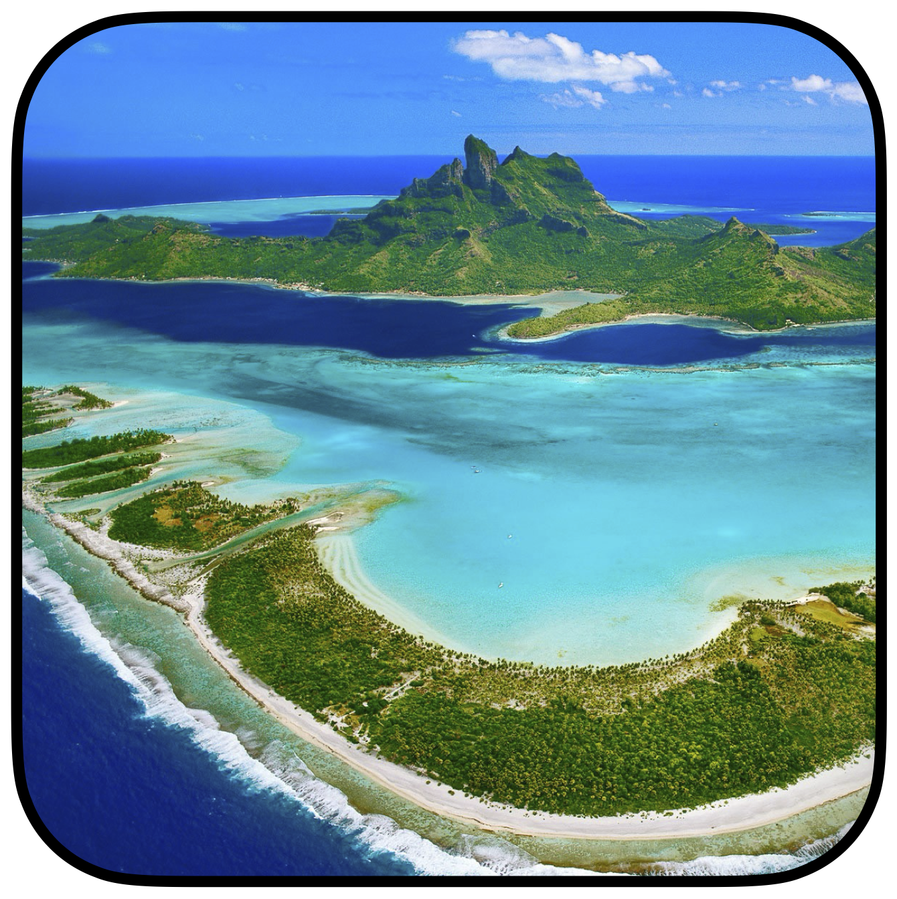

JÉRÉMY T. CARLOT
MARINE BENTHIC ECOLOGIST
I am a post-doctoral fellow with the Institut de Ciènces del Mar at CSIC in Spain. I am mostly interested in measuring the physiological traits of marine organisms (e.g., calcification or net photosynthesis for benthic organisms, nutrients uptake for fish) to quantify how the ecosystem functioning is changing in the face of global change. My works involve a combination of fieldwork, in situ and ex-situ experiments, and advanced statistical modeling across local and large spatial scales.
You can download my full resume here:
last update: November 2026

Asynchronous population trends stabilize mesopredatory coral reef fish communities in the face of global change Karkarey R, … Carlot J … & Keith SA
Mass flowering of the seagrass Posidonia oceanica after 2022 record-breaking marine heatwaves Astruch P, … Carlot J … & Montefalcone M
Coral reef monitoring in French overseas territories: status, knowledge gaps, and improvements Adjeroud M, Carlot J … & Parravicini VDaily Mediterranean sea surface temperature, 1982 to today
Basin-average temperature for every day of the year. Each grey line is one year.
How warm is the sea right now, place by place?
Sea surface temperature anomaly relative to the 1982–2011 average for this date. Each hexagon is about 30 km across.